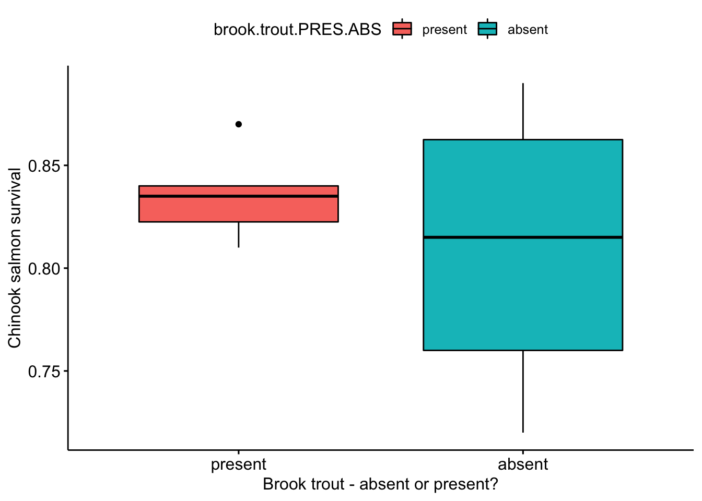

This vignette shows an example of reporting the results from a 2-sample t-test using data on the impact of invasive trout on salmon survival. The data are originaly from Levin et al (2002) are used in an example in chapter 12 of Whitlock & Schulter 2nd. See ?brook_trout_ABD for more details.
Levin et al. 2002. Non–indigenous brook trout and the demise of Pacific salmon: a forgotten threat? PRSB 269. DOI: 10.1098/rspb.2002.2063
The data are availabe in the wildlifeR package and can be loaded using data(wildlifeR). Note that if you use the dataframe in wildlifeR you have to calculate the survival rate by hand. I will remake the data by hand as an example of making a simple dataframe.
The following code contains the essential parts of the dataframe: a column for the survival rate and for whether brook trout are present or basent.
salmon <- data.frame(survival = c(0.83,0.87,0.82,
0.84,0.81,0.84,
0.72, 0.84,0.75,
0.79,0.89,0.87),
brook.trout.PRES.ABS =
c("present","present","present",
"present","present","present",
"absent","absent","absent",
"absent","absent","absent"))I’ll make a boxplot of the raw data using the ggboxplot() function from the package ggpubr, which contains wrappers that extend ggplot2. Be sure to download and install these packages if needed.
library(ggpubr)## Loading required package: ggplot2ggpubr::ggboxplot(data = salmon,
y = "survival",
x = "brook.trout.PRES.ABS",
fill = "brook.trout.PRES.ABS",
xlab = "Brook trout - absent or present?",
ylab = "Chinook salmon survival")
The null (Ho) and alternative hypotheses (Ha) are as follows:
t.test(survival ~ brook.trout.PRES.ABS,
data = salmon)##
## Welch Two Sample t-test
##
## data: survival by brook.trout.PRES.ABS
## t = -0.86344, df = 5.9267, p-value = 0.4215
## alternative hypothesis: true difference in means is not equal to 0
## 95 percent confidence interval:
## -0.09606084 0.04606084
## sample estimates:
## mean in group absent mean in group present
## 0.810 0.835For the real data, the results could be reported like this: “There was no evidence that the mean survival of salmon when brook trout are present (mean = 0.81) is different than when brook trout are absent (mean = 0.84; 2-sample t-test: p = 0.44, t = 0.82, n = 12 streams, df = 6).”
Normally I would also report the standard errors (SE) around the means, but for this exericise we will ignore it.
What if the results really looked like this?
##
## Welch Two Sample t-test
##
## data: fake.surv by salmon$brook.trout.PRES.ABS
## t = 3.5042, df = 5.6723, p-value = 0.01399
## alternative hypothesis: true difference in means is not equal to 0
## 95 percent confidence interval:
## 0.02925548 0.17124452
## sample estimates:
## mean in group absent mean in group present
## 0.81000 0.70975The results could be reported like this: “Surival of chinook salmon in streams where brook were present (mean = 0.71) was significantly lower than when brook trout were absent (mean = 0.81) with a mean difference of 0.10 (95% CI: 0.03-0.17; 2-sample t-test p = 0.012, t = 3.6, n = 12 stream, df = 5.73)”